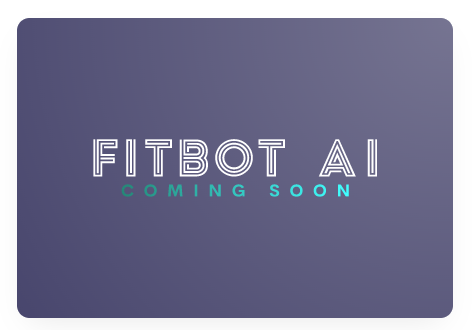
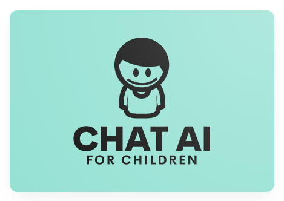

“FitBot AI” is an AI-powered personal trainer for muscle building and weight loss. “FitBot AI” app has AI technology to generate personalized workout plans tailored to your fitness goals, level, and available equipment. Some of the functions of the FitAI app are: - It provides access to a vast library of exercises, each one with detailed instructions, videos, and animations. - It allows you to easily track your progress, set and achieve your targets, and stay motivated with a workout tracker and gym log. - It helps you schedule your workouts in advance and make sure you stay on track with a workout planner. - It offers a wide variety of exercises for bodybuilding and building muscle, as well as home workouts that don't require any equipment. - It encrypts your data in transit and lets you request that data be deleted.
“Chat AI for children” is an automated messaging-based service that allows children to interact with characters, brands, or topics of their interest. Some of the features are: - It has a compelling character with lots of personality, an inviting name, and a visually engaging avatar. For example, it has distinctive voices and appearances. - It uses simple language that children of all ages can understand and avoid long or complex responses. It uses visual language such as GIFs, emojis, and images to make the conversation more fun and engaging. - It provides suggested responses or choices to keep the conversation on track and avoid confusion or frustration. - It includes safeguarding measures to detect and respond to users in distress or disclose personal situations, even if the chatbot is not designed to provide such support. For example, Safer Chatbots is a guide that outlines 6 steps for programming the detection of keywords indicative of a high-risk situation, the deployment of a global ‘safe word’ users can type at any time, and a series of compassionate response messages along with contact details for reliable referral services. - It offers educational or entertaining content that matches the interests and needs of children.